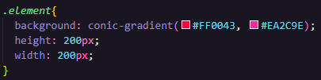
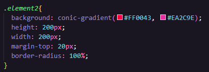

Usando o Conic Gradient:
O Conic Gradient é uma função do CSS que possibilita criar uma imagem que consiste de um gradiente com transição de cores rotacionadas ao redor do ponto central de uma div (ao invés de radiar do centro). Observe as imagens abaixo:
Para criar esse efeito, é muito simples, basta digitar o comando:
background: conic-gradient( cor(es) que deseja incluir )
dentro da div.
Replica do código:
Para a primeira imagem utilizando o conic gradient (Quadrado).
Para a segunda imagem utilizando o conic gradient (Circulo).